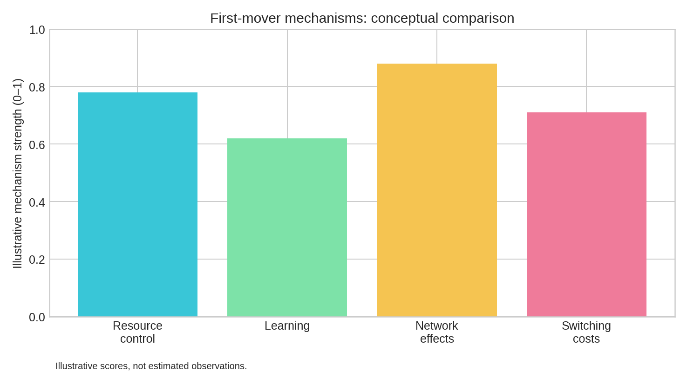
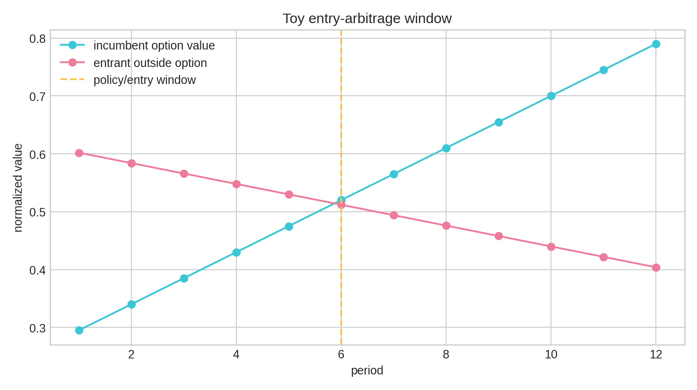
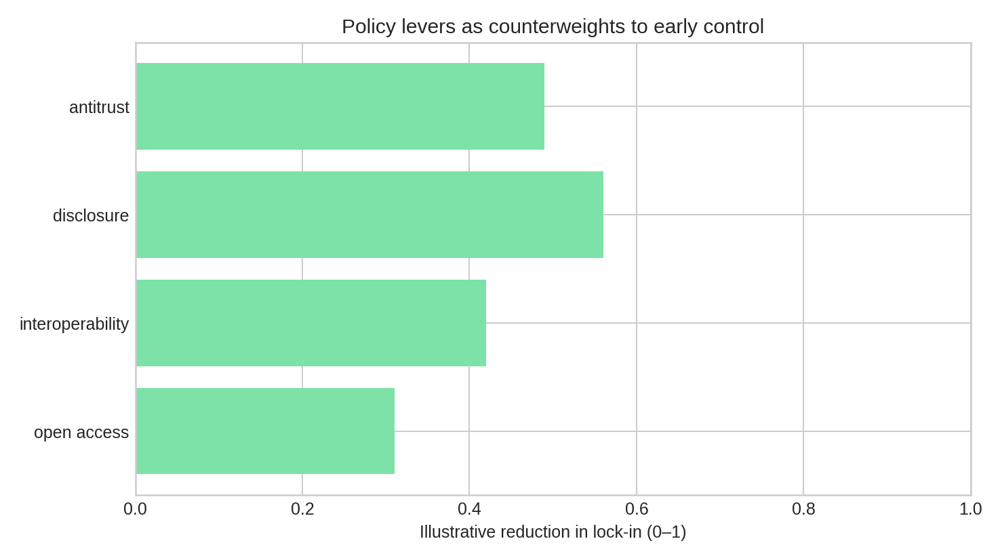

Keyholes,
Camouflage,
First Moves.
A political-economy paper on asset ownership, information asymmetry, arbitrage, first-mover advantage, network effects, and democratic contestability.
Read the paper
📄 Download the 18-page PDF
🐍 View the reproducible Python source
Chess and hyperstar language are metaphors. The paper separates metaphor from evidence and cites industrial-organization, property-rights, development, and competition-policy sources.


